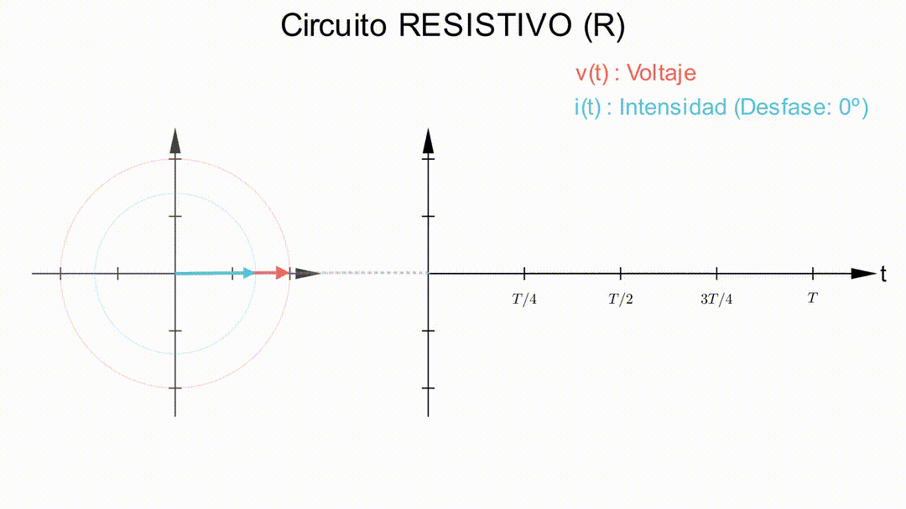
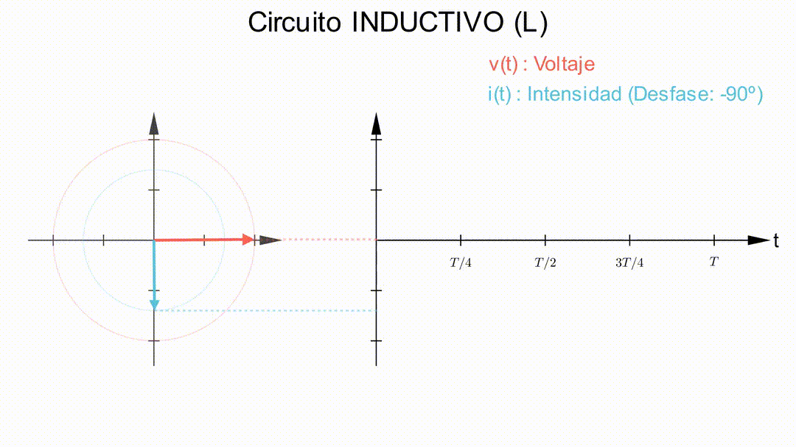
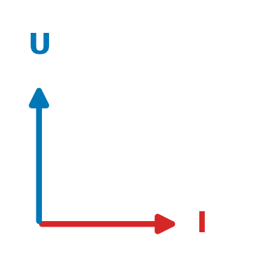

viewof angulo_i_deg_anim_3 = Inputs.range([-90, 90], {
value: -45,
step: 1,
label: "Desfase I (grados):"
})
// --- 2. MOTOR DE TIEMPO (Continuo) ---
now_3 = {
while (true) {
yield Date.now();
await new Promise(resolve => requestAnimationFrame(resolve));
}
}
// Velocidad de la animación
speed_3 = 0.002
t_anim_3 = now_3 * speed_3
// --- 3. LÓGICA DE TEXTO ---
md`**Estado:** ${
angulo_i_deg_anim_3 < 0 ? "<span style='color:orange; font-weight:bold'>⚡ INDUCTIVO (I retrasa)</span>" :
angulo_i_deg_anim_3 > 0 ? "<span style='color:green; font-weight:bold'>🔋 CAPACITIVO (I adelanta)</span>" :
"<span style='color:blue; font-weight:bold'>💡 RESISTIVO (En fase)</span>"
}`3.1 Respuesta de una resistencia
Si a una resistencia de valor R ohmios (Ω) se la somete a una tensión sinusoidal de valor eficaz U y pulsación ω, la tensión instantánea aplicada a la resistencia es: \[u(t) = (\sqrt{2} U) \cdot \sen(\omega t + \varphi)\]
Según la ley de Ohm, tenemos que \(i(t) = u(t)/R\), y por tanto, la intensidad instantánea que circula por la resistencia es: \[i(t) = \frac{\sqrt{2}U}{R} \cdot \sen(\omega t + \varphi)\] Analizando las expresiones de la tensión y la intensidad, podemos concluir que:
- La intensidad eficaz es \(I=\frac{U}{R}\), igual que en corriente continua.
- El desfase entre la tensión y la intensidad es nulo. Es decir, están en fase (\(\varphi_{I}=\varphi\))
La representación gráfica de la tensión y la intensidad en una resistencia eléctrica será, por tanto:

3.2 Respuesta de una bobina
La característica básica de una bobina es su inductancia, que se denota mediante la letra L y se mide en Henrios (H). En corriente alterna, sin embargo, no basta con este valor sino que su respuesta será diferente para distintas frecuencias de funcionamiento.
Si a una bobina de valor L henrios (H) se la somete a una intensidad sinusoidal de valor eficaz U y pulsación ω, la intensidad instantánea que circula por la bobina es:
\[ i(t) = (\sqrt{2}I) \cdot \sen(\omega t + \varphi) \]
La ley que rige para una bobina es la siguiente:
\[u(t) = L \cdot \frac{di(t)}{dt}\]
Por lo tanto, la tensión instantánea en la bobina la obtenemos derivando la intensidad y resulta ser:
\[u(t) = L \frac{di(t)}{dt} = L \cdot (\sqrt{2}I) \cdot \omega \cdot \sen(\omega t + \varphi + \frac{\pi}{2})\]
NotaImportante
En realidad, la derivada del seno es el coseno, pero el coseno de un ángulo es igual al seno de su complementario (\(\cos(\alpha) = \sen(\alpha + \frac{\pi}{2})\)). Por lo tanto, podemos poner la expresión en forma de seno, para poder comparar los fasores de la tensión y la intensidad.
Por consiguiente, obtenemos una tensión con la misma pulsación que la intensidad y con las características siguientes:
Un valor de pico \(U_p=\omega \cdot L \cdot \sqrt{2} I\). Por lo tanto, la tensión eficaz es \(U=\omega \cdot L \cdot I\).
La tensión se encuentra adelantada 90° ($\pi/2 $ ) con respecto a la intensidad; la fase inicial de la tensión es \(\varphi_U = \varphi + \frac{\pi}{2}\).
Al producto \(\omega \cdot L\) se le llama reactancia inductiva y se representa por \(X_L\), es decir:
La unidad de la reactancia inductiva en el SI es el ohmio (\(\omega\)).
La representación gráfica de los fasores y ondas de tensión e intensidad en una bobina es la mostrada en la figura:

3.3 Respuesta de un condensador
La característica básica de un condensador es su capacitancia o capacidad, que se denota mediante la letra C y se mide en Faradios (F). En corriente alterna, sin embargo, no basta con este valor sino que su respuesta será diferente para distintas frecuencias de funcionamiento.
Si a un condensador de valor C faradios (F) se le somete a una tensión sinusoidal de valor eficaz U y pulsación co, la tensión instantánea aplicada al condensador es: \[u(t) = (\sqrt{2} U) \cdot \sen(\omega t + \varphi)\]
Aplicando la ley que rige un condensador, \(i(t) = C \cdot du(t) / dt\), la intensidad instantánea que circula por el condensador es: \[ i(t) = C \cdot \frac{du(t)}{dt} = C \cdot \omega \cdot ( \sqrt{2}U) \cdot \sen(\omega t + \varphi + \frac{\pi}{2}) \]
Obtenemos una intensidad con la misma pulsación que la tensión aplicada y con las características siguientes:
- Un valor de pico \(I_p=\omega \cdot C \cdot \sqrt{2} U\). Por lo tanto, la intensidad eficaz es \(I=\omega \cdot C \cdot U\).
- La intensidad se encuentra adelantada 90° (\(\pi/2\)) con respecto a la tensión; la fase inicial de la intensidad es \(\varphi_I = \varphi + \frac{\pi}{2}\).
Al cociente \(1/\omega \cdot C\) se le llama reactancia capacitiva y se representa por \(X_C\), es decir:
La unidad de la reactancia capacitiva en el SI es el ohmio (\(\omega\)).
La representación gráfica de los fasores y ondas de tensión e intensidad en un condensador es la mostrada en la figura:

3.4 Cuadro resumen con las respuestas R, L y C
| Elemento | Representación gráfica | Relación Tensión/Intensidad | Desfase rad (º) |
|---|---|---|---|
| Resistencia (\(R\)) |  |
\(R\) | \(0^\circ\) |
| Bobina (\(L\)) |  | \(X_L = \omega \cdot L\) | \(+\pi/2 \ (+90^\circ)\) |
| Condensador (\(C\)) |  |
\(X_C = \frac{1}{\omega \cdot C}\) | \(-\pi/2 \ (-90^\circ)\) |
3.5 Combinación de cargas de diferente naturaleza
Por lo general, en un circuito tendremos cargas que ofrecerán diferentes resistencias eléctricas. Además, algunas presentarán también carácter inductivo o capacitivo. Dependiendo de la combinación de elementos que tengamos en cada circuito, el desfase entre la intensidad y la tensión podrá tomar diferentes valores, no solo 0º, -90º o +90º. En este simulador puedes ver cómo cambiarían los fasores de la tensión y la intensidad dependiendo de cómo variemos las componentes R, L o C de un circuito:
Controla el desfase con el deslizador.